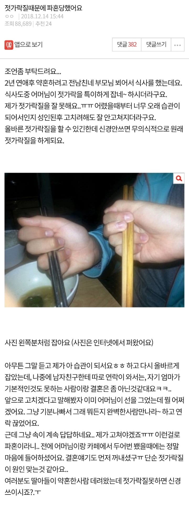
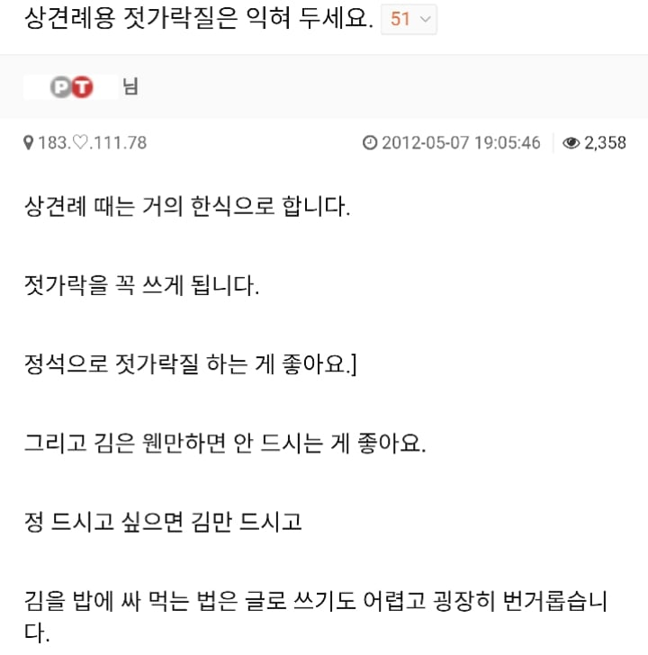

결혼할때오면 급하게 고침


결혼할때오면 급하게 고침
근데 뭐 나만 하필 경험이 몰렸을수도 있는데 젓가락을 남다르게 사용하는 사람과 알고 지내다보면 꼭 발생하는 지리멸렬한 본인 합리화 내로남불 문제를 겪게됨
근데 틀딱 맞잖아
손 다한증이 심각해서 (종이에 손찍으면 손자국 투명해질 정도. 특히 손끝마디 개심함) 정석젓가락질하면 젓가락 줄줄 미끄러져 흘러내리는데 수족다한증은 수술부작용도 개심해서 젓가락질 하나때메 수술하기도 그렇고;; 펜도 종이에 손닿으면 다 젖으니까 손안닿게 쥐어야해서 특이하게쥠. 근데 이런 케이스면 뭐 어케할수가 없지않나...
너같은 경우면 배우자될 사람도 사전에 자기 부모에게 설명해서 상관없겠지 그런 설명도 이해 못 할 집안이면 니가 결혼 생각 다시 해보는게 맞고
근데 바로 윗 댓글들봐라 바로 틀딱 박아버리잖아 저런 애들이 젓가락질 잘 할 가능성보다는 못 할 가능성이 높으니 젓가락으로 사람판단하는 것도 굉장히 틀리다고 말하기에는 기본적인 부분이 부족할 확율이 높은게 사실이잖아 그러니 사전 양해를 구하는 자세가 정중하면 별 문제가 없다고 본다
틀딱맞지 그 틀딱들이랑 결혼하는것도 아니고 그 틀딱들 설득할 자신도 없으니 걍 고치는거지
그 비제이 짤 같이 있냐 없냐에 따라
옹호빈도가 급격하게 줄어들듯 ㅋㅋㅋ
키작남은 호빗이 긁히고 젓가락질은 좆가락질 하는애들이 긁히는거보니 거르는게 맞네 ㅋㅋㅋ젓가락질 애초에 정상적으로 했으면 안긁혔겠지 ㅋㅋㅋㅋㅋㅋㅋ
못할수도 있지
문신과 같은거 아닌가. 젓가락질을 제외한 다른 가정 교육은 잘 받았음을 끊임없이 증명하며 살아야지.
아 다른젓가락질 욕하는 틀딱들 놀린거ㅋㅋ